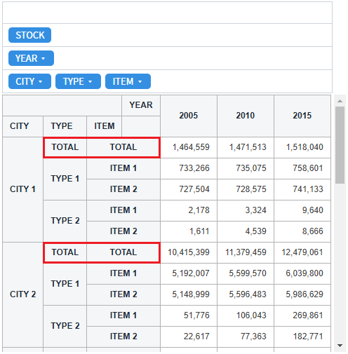
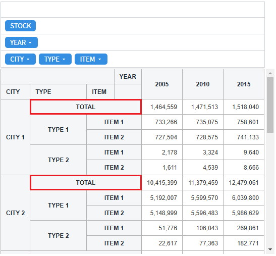
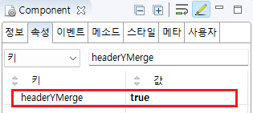

Pivot의 'headerYMerge' 속성을 사용하여 Y축 헤더 컬럼을 병합한 예제입니다. 이 속성의 설정을 통해 Y축에 출력된 헤더의 값이 동일한 경우 병합할 수 있습니다.
Y축 헤더 컬럼 병합 미사용
Y축 헤더 컬럼 병합 사용
예제 영역 '(기본설정) Y축 헤더 컬럼 병합 미사용'에서 테스트합니다.1
실행 결과를 확인합니다.
기능 비교를 위해 Y축 헤더 'TYPE', 'ITEM'의 값이 'TOTAL'인 행을 확인합니다.
컬럼이 병합되지 않고 나뉘어 동일한 값이 출력됩니다.
Image 1.브라우저(Chrome) 실행 예시

예제 영역 'Y축 헤더 컬럼 병합 사용'에서 테스트합니다.1
실행 결과를 확인합니다. 기능 비교를 위해 Y축 헤더 'TYPE', 'ITEM'의 값이 'TOTAL'인 행을 확인합니다. 컬럼이 병합되어 출력됩니다.
Image 2.브라우저(Chrome) 실행 예시

1
속성을 설정합니다.
[필수] headerYMerge="true"
[default:false, true] 세로 헤더의 값이 동일한 경우 병합시키는 기능. 끝에서부터 가로 병합되지 않은 데이터까지 병합
Image 3.웹스퀘어 스튜디오의 Component View - 속성 설정 예시

Example 1.Source
<!-- pivot 의 소스 본문 예시 --> <w2:pivot headerYMerge="true" id="piv_ex02"> <!-- 중략 --> </w2:pivot>
headerYMerge